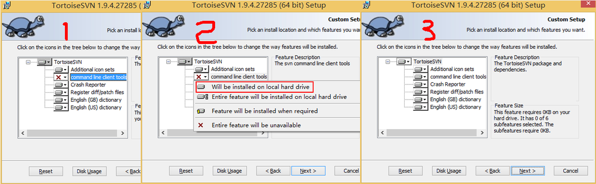
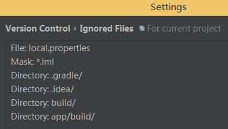

Directory
本文以Android Studio 2.0版本为例
1，TortoiseSVN下载
2，TortoiseSVN安装
注意需要选择command line client tools —> will be installed on local hard drive，因为Android Studio配置SVN的时候需要使用到。

3，配置Android Studio
打开Android Studio，File —> Settings —> Version Control —> Subversion —> General —> User command line client ，选择自己TortoiseSVN安装目录下的bin目录里的svn.exe，如果没有找到svn.exe，重复第2步。
4，配置Android Studio 提交忽略文件
File —> Settings —> Version Control —> Ignored Files 点击右侧加号添加忽略文件或目录，一般配置如下，往后提交，这些文件及目录会自动被忽略掉了。 忽略文件

5，从SVN服务器获取项目
VCS —> Checkout form Version Control —> Subversion —> Checuout from Subversion 点击旁边的+号添加资源库，资源库添加成功，选择对应的项目目录，点击Checkout就可以获取项目了
6，把本地项目上传到SVN服务器
VCS —> Import into Version Control —> Import into Subversion… —> Import into Subversion 点击旁边的+号添加资源库，资源库添加成功，选择对应的目录，点击Import就可以把本地项目上传到服务器了
7，注意
如果.gitignore文件丢失，可以通过右键项目，New —> .i*,.ignore file 进行添加